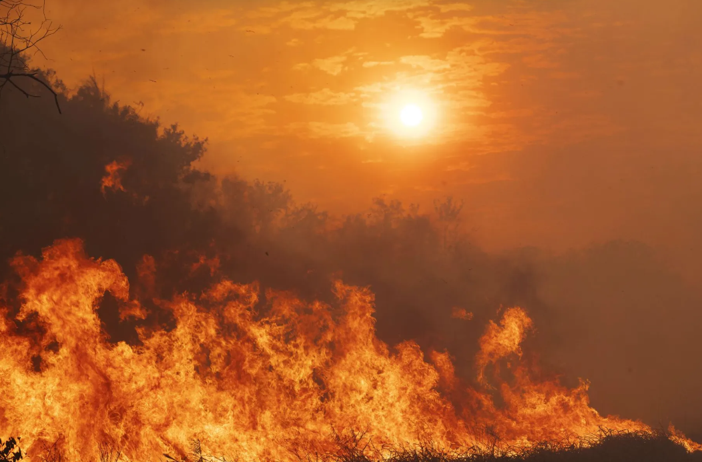

As queimadas são uma prática que, além de impactar a biodiversidade, contribuem significativamente para as mudanças climáticas, gerando prejuízos ambientais, sociais e econômicos.
As queimadas podem ter causas naturais ou humanas. As principais causas incluem:
As queimadas destroem florestas, reduzem a biodiversidade e aumentam a emissão de gases de efeito estufa.
As queimadas afetam a saúde pública, provocam problemas respiratórios e impactam negativamente a economia local, principalmente no setor agrícola.
Em caso de queimadas, é importante acionar as autoridades locais e seguir as seguintes medidas:
Veja como você pode ajudar e se envolver em campanhas de prevenção e combate às queimadas:
Endereço: Rua do General, 132 - Vassouras, Brasil